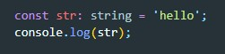
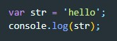

Первое что нужно заметить что файлы с языков TypeScript имеют расширение не .js, а .ts
Теперь что бы вообще работать с TS необходимо его установить глобально на компьютер, для этого в консоле вводим команду:
npm install -g typescriptПосле того как TS был установлен мы сможем его использовать. Как это делается. Создадим файл script.ts и в него поместим вот такой код:
Теперь нам нужно из файла TS скомпилировать файл JavaScript. Для этого в проекте открываем консоль и вводим вот такую команду:
tsc script.tsПосле того как компилятор будет вызван в папке с проектом появится файл script.js c кодом на JavaScript
